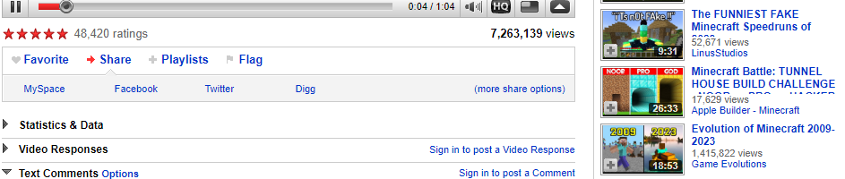

DulceBravo (2 Hours Ago)
One of my earliest memories of the internet was spending hours with my brother searching up random videos online!
This was around 2008? So there wasnt many video sharing sites just yet and we would often just end up on Youtube, at that time Youtube's platform looked alot like the format of this site!
This was also way before laptops were easily accessible, so we would usually use the huge destop PC's, still it was tons of fun and we'd mostly watch funny videos and music videos!